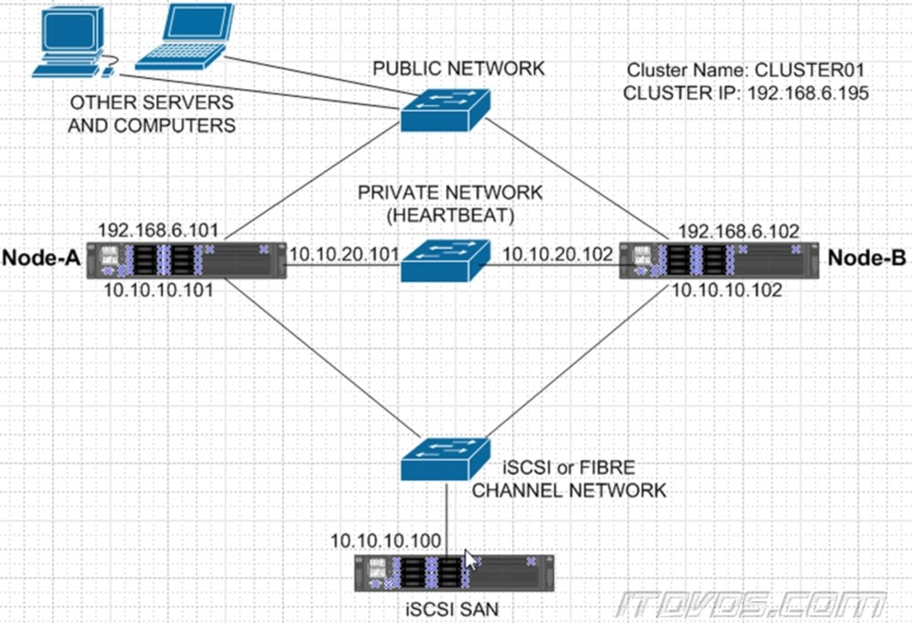

Overview

With a Failover Cluster, the goal is to keep an application up and running at all times. Even if we have a hardware failure, the clients that are connecting to that won't even know that there was a problem.
The nodes in a cluster here are servers.
A shared storage is going to be accessed by all of the nodes.
That's what makes it possible if we have a failure. For example, Node A goes down for the application to run on Node B because we already have the application installed on the disks internal to this server. And then it connects to that shared storage where the database files are.
Now you might be wondering well how do the clients know to connect to Node A? They use a virtual name and a virtual IP address.
Virtual Name and a Virtual IP Address
A name and IP address that can be owned by any active node. The client computers use this virtual name, for example Cluster 1, it translates its IP address and if Node A owns it then they connect to it. They don't actually type in Node A, but instead to Cluster 1. When a failover occurs, Node A goes down, fails over to Node B, and Node B now owns Cluster 1. Since client computers uses virtual name to connect, they automatically get routed to Node B which makes it possible for them to be able to automatically connect to the active node in the event of a failure.
Active-Active node
Clustered shared volumes allow both nodes to be active. Instead of having an active-passive scenario, we can have active-active so that both nodes are reading and writing to that clustered shared volume, which is a storage on our SAN normally or a SAS array.
In a traditional failover cluster, these are physical machines. Now, we can make them virtual machines and have our shared storage be a virtual disk. The bottom line is the concepts are all going to remain the same.
- Clients that are going to connect to the cluster.
- Nodes in the cluster
- Shared storage
- Public Network - The network that the clients are going to use to access the clustered application.
- Private Netowork (heartbeat) - The network which our cluster nodes are going to use to communicate back and forth to each other.
- Storage Network - Either it's iSCSI, this is going to be an Ethernet network. If it's fiber channel it's going to be a fiber network, this would be a fiber switch If this is a SAS array these are going to be SAS cables that are directly connected from Node A to the SAS array to Node B to the SAS array.
Quorum
- The mechanism that helps ensure that the cluster operates correctly and prevents split-brain scenarios.
- The quorum configuration determines the number of failures that the cluster can sustain while still being operational.
- It is achieved when a majority of the cluster nodes (or a defined quorum resource) are in agreement on the cluster's status. This is essential to avoid scenarios where different parts of the cluster operate independently, which could lead to data corruption or inconsistency.
Quorum Models:
- Node Majority - Only the nodes in the cluster have votes. The cluster functions as long as more than half of the nodes are online.
- Node and Disk Majority - Nodes and a designated disk (witness) have votes. The cluster remains functional as long as a majority of votes are present.
- Node and File Share Majority - Similar to the Node and Disk Majority, but uses a file share witness instead of a disk.
- No Majority (Disk Only) - Only a disk witness is required to be online. This is not typically recommended for HA since it doesn't protect against disk failures.
The choice of quorum model depends on the specific needs and configuration of the cluster environment.
Dynamic Quorum
- A feature that enhances the availability of the cluster by dynamically adjusting the quorum voting mechanism based on the current state of the nodes.
- Introduced in Windows Server 2012, it ensures that the cluster can continue to operate even if multiple nodes fail, as long as a majority can be maintained.
Key aspects of dynamic quorum include:
- Automatic Vote Assignment - The cluster automatically manages the voting rights of nodes. It adds or removes votes as nodes join or leave the cluster. This adjustment helps maintain the necessary majority to keep the cluster running.
- Survivability - If a node fails, it can remove the vote of the failed node, which recalculates the majority based on the remaining nodes. This prevents the cluster from losing quorum and going offline unnecessarily.
- Enhanced Fault Tolerance - It allows the cluster to handle multiple node failures more gracefully. The cluster can continue operating as long as at least one node with a vote remains online and can maintain the majority with the adjusted votes.
- Node Weight Configuration - Administrators can manually adjust the weight (voting capability) of nodes if needed, but dynamic quorum typically handles this automatically.
- Integration with Dynamic Witness - When used with the dynamic witness feature, the quorum configuration can further adapt by adding or removing the witness vote (disk or file share) dynamically, depending on the number of active nodes.
It enhances the robustness of WSFC by ensuring that the cluster remains operational under varying failure conditions, making it a critical feature for maintaining HA in enterprise environments.
Example Scenario
The idea of it in a cluster is suppose I have multiple boxes (Node A, Node B, Node C, and Node D) and suppose they are physically separated by group of 2's (different locations, network connecting them). Now the challenge with a cluster is supposed they had some break in the communication (they can no longer communicate) You don't want both parts of the clusters offering the same services at the same time as you'll get corruption.
Each node has one vote and in order to make quorum, you must have more than 50% of the number of votes. In a 4-node cluster where each 2 nodes are grouped separately, we'll need greater than 2 votes.
The challenge in this situation is each part has exactly two votes. Neither half would be able to make quorum so the cluster would just shut down on both sides. On a 5-node cluster where 1 group has 3 nodes, which has a total of 5 votes, if the groups had a break in communication, the side with 3 nodes (3 votes), it can make quorum and continue on functioning. Whenever there are odd number of nodes, and there was a break in communication, it still make a quorum and continue to run services.
In a scenario, where the nodes are even in numbers, we can add a witness in instead. This witness also has a vote having a total of 5 votes. If there was a break in communication only one side of the cluster would lock that disc (or file share, or cloud) and that would count in their quorum calculation.
Going back to 4-node setup, and in the case of a maintenance, where 1 node needs to be shut down. There will now be three votes left which fine since it's greater than 50% of the cluster. But suppose a second node was shut down or crashed during maintenance. There will now be two votes which is not greater than 50%. Now the entire cluster would shut down.
A dynamic quorum does is in a planned scenario, for example, a maintenance, the node that had a clean shutdown will lose its vote. It's dynamically changing the quorum of the cluster. As the nodes get up again, it get its votes back. When you only have two nodes left (there's no disc witness there's no file share witness), this is fine since it randomly picks one and one of them keeps its vote and the other loses its vote.
With two nodes only remaining, it gives us a 50% chance of surviving a node failure.
- If there is an unplanned scenario where the node with no vote crashed, the other node would continue running.
- If there is an unplanned scenario where the node with vote crashed, the other node would shut down.
- If there is a planned scenario where the node without vote shuts down, the other node would continue running.
- If there is a planned scenario where the node with vote shuts down, the vote will transfer to the other node and would continue running.
The great thing in Windows Server 2012 R2, if there is an even number of nodes, it use that witness and if there's an odd number of nodes it doesn't use the witness.